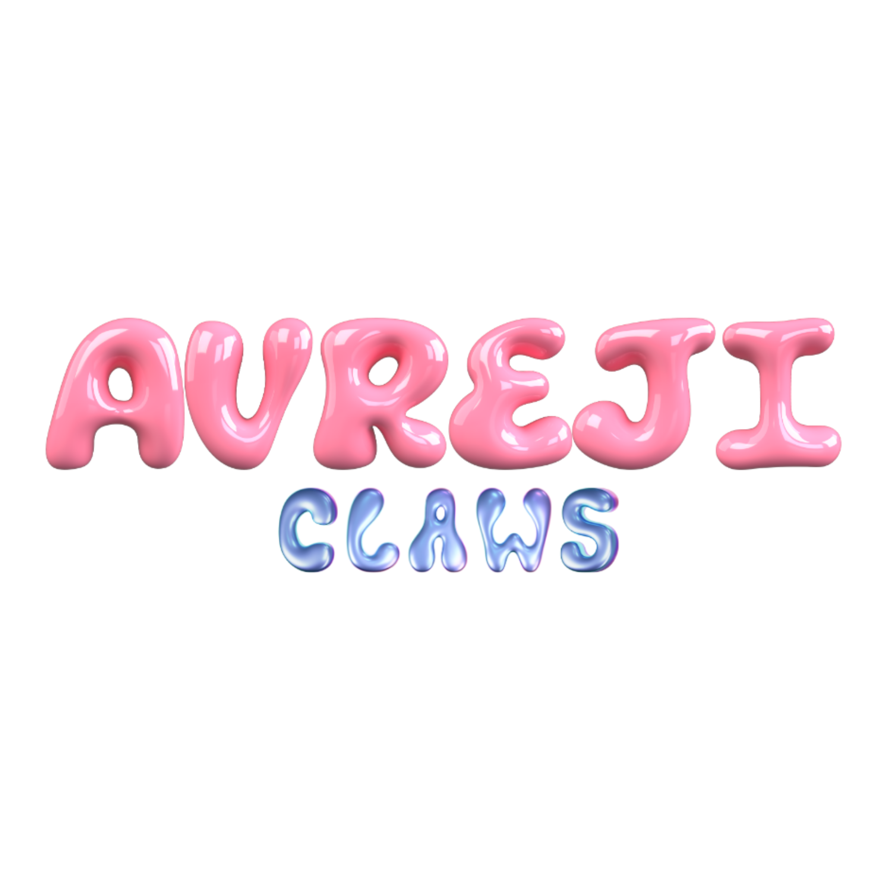
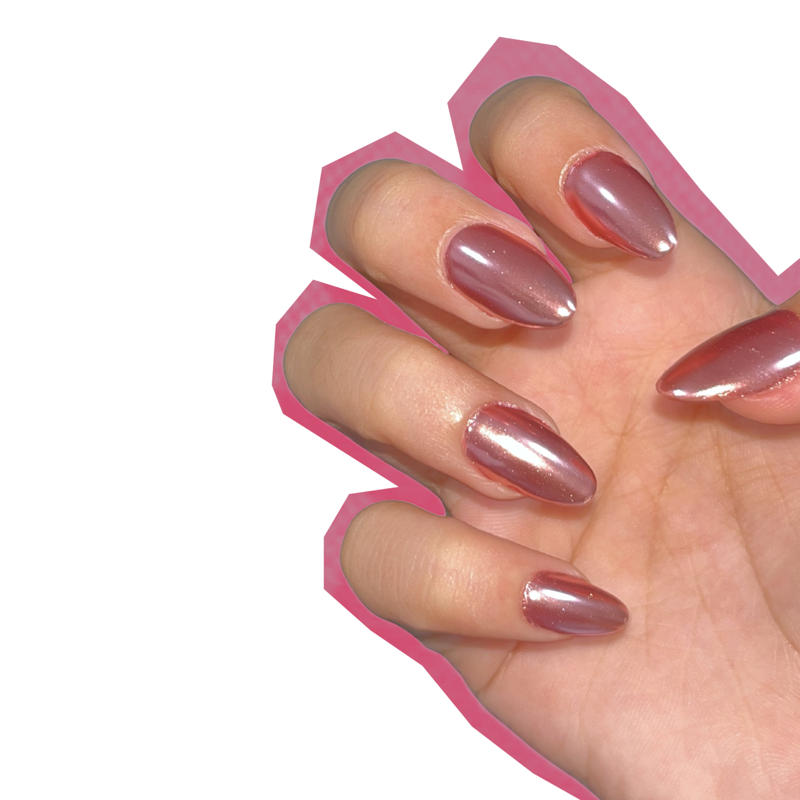

My story
A little love, a little sparkle.
The name Aureji Claws comes from a special mix of love and identity: Uji, a beloved cat, and Angel. The idea stayed a dream for two years until it finally came to life in June 2025.
What started as a simple hobby grew into something to cherish. Aureji Claws is a place for fun, creativity, and self-expression through nails that are more than accessories: each set is a tiny work of art.
Our mission
To make every set bring confidence, joy, and a little sparkle to everyone who wears them.
